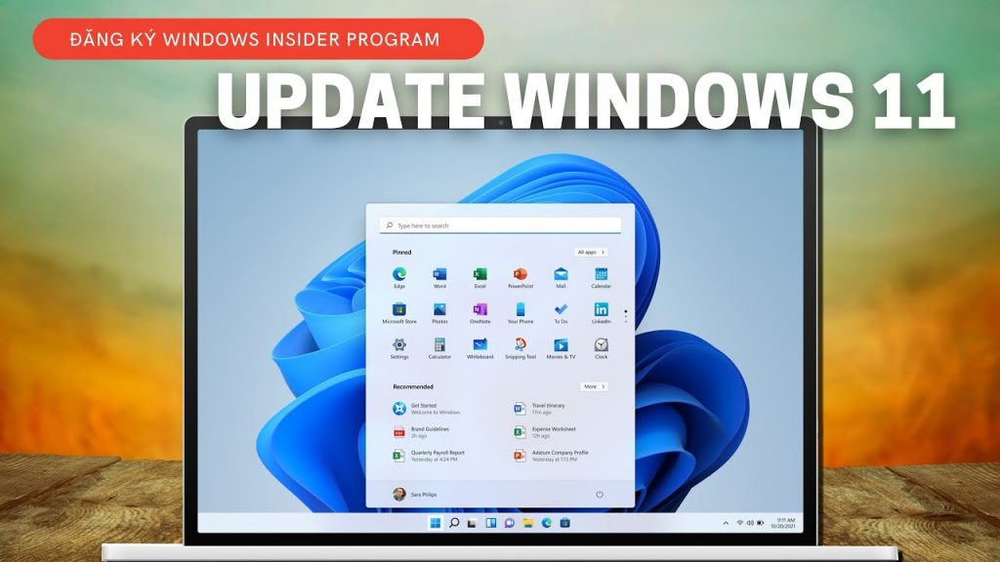
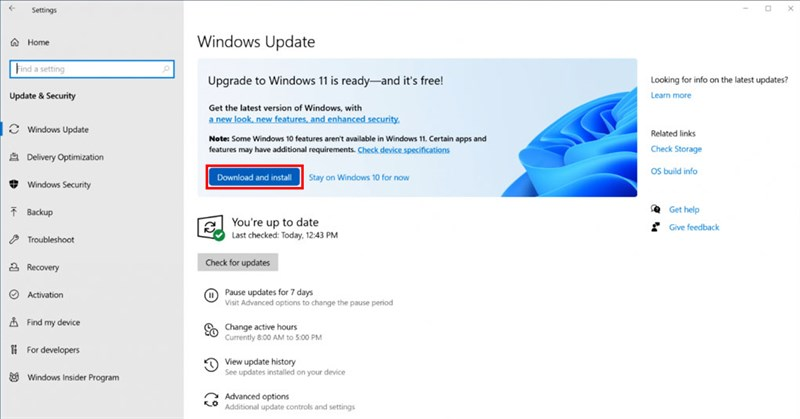
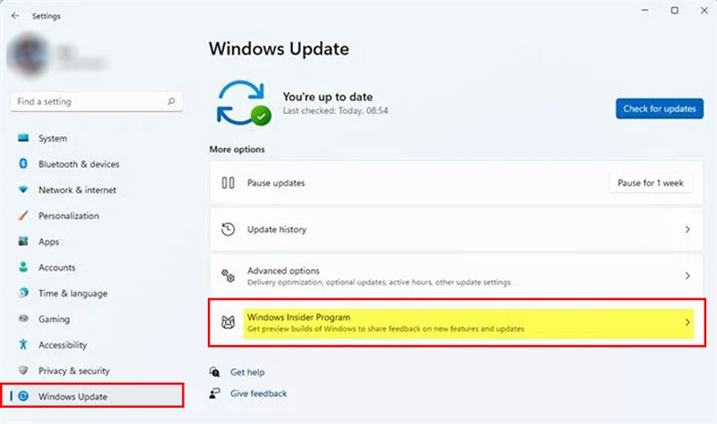
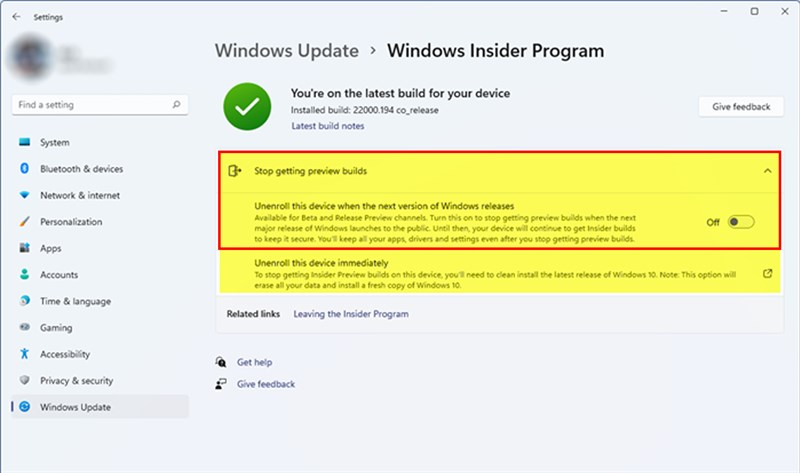

Hướng dẫn update lên windows 11 nhanh chóng, đơn giản nhất
Để đảm bảo cho máy tính hoạt động được tốt nhất, Microsoft luôn không ngừng phát triển và cho ra đời rất nhiều các bản update dành cho Windows. Và một trong số những bản update đỉnh nhất phải kể đến cái tên Windows 11. Máy tính của bạn có thể sẽ được mặc định sẵn chế độ tự cập nhật hoặc là bạn sẽ phải tự làm thủ công bằng các thao tác. Nếu bạn chưa biết cách cập nhật phiên bản mới này như thế nào, thì trong bài viết dưới đây chúng tôi sẽ hướng dẫn update lên windows 11 một cách đơn giản, nhanh chóng mà bạn có thể tham khảo và làm theo nhé.

Hướng dẫn cách update Windows 11
CẬP NHẬT WINDOWS 11 CHÍNH THỨC
Đối với một số máy tính đã tương thích sẵn trước đó, thì mỗi khi Microsoft cho ra những bản update mới thì đều sẽ hiển thị thông báo lên PC. Máy tính của bạn có thể là ở bất kì bản Windows nào, có thể là Windows 7, 8, 9..và giờ muốn được cập nhật lên Windows 11, tất cả đều có thể tiến hành được. Và việc của bạn là lựa chọn cập nhật ngay bây giờ hoặc có thể là thiết lập thời gian cập nhật tùy vào sự lựa chọn, mong muốn của bản thân.
Bước 1: Bạn bấm vào Settings- Update & Security – Windows Update
Bước 2: Khi bạn thấy thông báo nâng cấp lên Windows 11 chính thức thì hãy nhấn vào Download and install để có thể cài đặt phiên bản cập nhật mới này.

Đối với đặt lịch cập nhật bạn có thể bấm vào Schedule the restart nằm bên cạnh tùy chọn Restart Now phía bên phải. Sau đó máy tính sẽ chuyển đến một trang điều chỉnh thời gian, bạn sẽ gạt nút Schedule a Time sang On và việc của bạn là lựa chọn thời gian cài đặt sao cho phù hợp với bản thân.
CẬP NHẬT WINDOWS 11 THÔNG QUA WINDOWS 11 INSIDER
Để có thể cập nhật được Windows 11 một cách nhanh chóng, chúng ta cũng có thể lựa chọn cập nhật thông qua Windows 11 Insider bằng các bước sau:
Bước 1: Chọn Settings- Windows Update- Windows Insider Program.

Bước 2: Lựa chọn vào Stop getting preview builds- bật nút On ở trong mục Unenroll this device when the next version of Windows releases. Khi đó máy tính sẽ tự động tắt bạn khỏi chương trình Insider và thay vì đó, bạn chỉ nhận bản cập nhật Windows 11 chính thức để cập nhật.

CẬP NHẬT WINDOWS 11 TỪ WINDOWS 10
Trong trường hợp máy tính của bạn đã có sẵn Windows 10 và bây giờ bạn muốn update lên phiên bản Windows 11 thì bạn sẽ phải làm thế nào. Nếu bạn muốn update lên để có thể trải nghiệm những tính năng mới của phiên bản mới ra này, nhưng chưa biết cách làm thế nào? Chúng tôi sẽ hướng dẫn bạn ngay đây.
Bước 1: Hãy chuẩn bị sẵn một tài khoản Microsoft. Nếu bạn muốn cài đặt được Windows 11 thì trước hết hãy chuẩn bị cho mình một tài khoản Microsoft. Trong trường hợp chưa có thì bạn có thể tạo lập tại đây.

Bước 2: Đăng ký tham gia vào chương trình Windows Insider Program tại đây và sau đó bấm nút Register- Sign in now. Sau khi đã đăng kí xong thì bạn cần liên kết tài khoản Microsoft với máy tính đang chạy Windows 10 bằng cách bấm vào Start- Settings- Accounts – Your account. Ở phần khung phía bên phải bạn hãy nhấn vào liên kết sẵn Sign in with a Microsoft account instead .

Bước 3: Đăng nhập vào tài khoản Microsoft

Bước 4: Sau khi đã đăng nhập thành công, hãy bấm vào Start- Settings- Update and Security. Tại đây, hãy bấm vào tùy chọn Windows insider Program ở phần khung phía bên phải và sau đó bấm vào nút Get Started ở bên trái.

Bước 5: Bấm vào nút Link an account trong tài khoản Microsoft mới đăng nhập ở phía trên xong, hãy bấm Continue để tiếp tục hoàn thành.


Chuyển về màn hình và bấm chọn vào Pick your Insider settings, bạn hãy kích vào tùy chọn Dev Channel vì Windows 11 chỉ có thể hiển thị rõ ràng khi đã được triển khai cho người dùng ở trên kênh này. Tiếp theo hãy bấm nút Confirm > Confirm để tiếp tục.
Bước 6: Kiểm tra phần đã cài đặt
Bấm vào Start- Settings- Update & Security – Windows Insider Program thêm một lần nữa để kiểm tra lại phần cài đặt của bạn đã hoàn chỉnh hay chưa.
Bước 7: Sau khi đã kiểm tra xong hãy tiếp tục truy cập vào Start- Settings- Update and Security – Windows Update và sau đó hãy bấm vào Check for updates ở phía bên phải.

Bước 8: Sẽ mất một thời gian để Windows 10 có thể tải xong phiên bản cập nhật mới. Khi đã hoàn thành xong thì phiên bản Windows 11 Insider Preview Build 22000.51 sẽ được chạy trên bản Windows 10 sẵn có. Bấm Download để tải về máy tính.
Bước 9: Hoàn tất quá trình cập nhật.
Trên đây là những cách hướng dẫn update Windows 11 đơn giản lại đạt hiệu quả nhanh chóng được rất nhiều người tin tưởng và lựa chọn. Nếu bạn cũng đang muốn trải nghiệm cảm giác được lên đời Windows 11 thì còn chần chờ gì mà không đọc ngay và áp dụng thôi nào.
Bạn đừng quên tải thêm phần mềm điều khiển máy tính từ xa UltraViewer để hỗ trợ bạn bè, đối tác từ xa nâng cấp máy tính lên Windows 11 bạn nhé!


Viết bình luận (Cancel Reply)